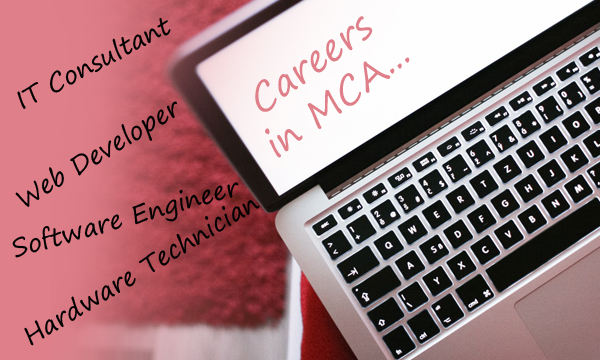
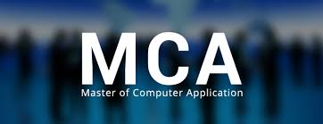

Career Options in MCA
MCA is one of the hottest career options available today! This is because after earning an MCA degree from a reputed Institute, there is plethora of job opportunities available in the market. However, the true dilemma begins after earning an MCA degree…This is because in reality there is such a wide scope of MCA in Government as well as Private sector, that students get confused which path to follow – whether to go for Software Engineering or Web Development or in Hardware and Networking?
Let’s get to know MCA better…
What is MCA?
MCA (Master of Computer Applications) is a three-year Professional Master Degree program in Computer Science. The objective behind MCA is to equip students with the latest technologies, tools and applications in IT and to meet the ever-growing requirement of IT professionals. MCA students need to study Financial Management, Accounting, Mathematics, Programming Languages like C, Java, ASP .Net, Web Development, Database Management System, and so on.

Companies Hiring MCAs:
MCA post graduates are hired both by Government agencies NTPC, GAIL, BHEL, etc and private IT companies like Accenture, Infosys, Wipro, TCS, Cognizant, IBM, American Express, HCL, HP and so on. As a fresher, an MCA professional can expect anything around 2.4 to 3.4 lakhs, and with experience, sky is the limit! With some years of experience, a Software Engineer can become a Lead, an Analyst, a Project Manager, a General Manager and so on. Initially MCA students are given a few weeks of training on the job, before they get started on LIVE projects. They need to work in different roles and areas in the beginning and then gradually specialize in a specific field.
Career Opportunities after MCA:
After getting an MCA degree, one can enter any of the following roles:
1. Software Developer/Programmer/Engineer:
Software Developers are responsible for designing, installing, testing and maintaining the software systems. They provide IT services by analyzing the client needs and designing the system to meet those requirements. It is a very creative field that goes beyond the usual job of coding.
2. Troubleshooter:
Troubleshooters are the lifeline of any organization. They make sure that the technology (hardware and software) is easily accessible to all those who require them. If any issue comes up, troubleshooters take the charge of resolving it so that the projects are delivered on time. They also maintain the resources required by software developers and others.
3. System Analyst:
A system analyst is responsible to design innovative IT solutions to drive businesses and increase efficiency. Their role is to study the current business situation, business processes and models, and design better IT solutions in terms of software for their clients. They are a bridge between the software developers and the clients.
4. Software Application Architect:
The role of a Software Architect is to make high-level decisions in Architecture and design of IT products or services. He/she develops technical guidelines and protocols such as software coding standards, tools and platforms. They make use of several software architectural models to get their job done.
5. Software Consultant:
Consultancy is a very popular career option today. A software consultant is responsible for evaluating a business, its processes and provides software solutions and other feedback to drive the business efficiency. He can be self-employed or work for a consultancy firm. His objective is to provide cost-effective solutions to enhance sales and business growth.
6. Hardware Engineer:
Hardware engineers love working with computer hardware such as hard disk, wires, circuit boards, computer chips, printers, keyboards, routers, and so on. They like the challenges of installing and testing the systems, making sure that internet works smoothly. They are also engaged in the production and testing of hardware equipment.
7. Technical Writer:
Technical writing is a good blend of technology and your creative writing skills. If you have a passion for latest technologies, gadgets and at the same time you love writing, then technical writing is a great career option for you. A technical writer needs to write technical documents such as product description, User Guides/Manuals, Design specifications, White Papers, Project Plan and so on.
8. Systems Developer/Engineer:
Systems developers are involved in writing codes and designing programs for operating systems and other software. They work towards increasing efficiency and suggest further growth and developments. They can specialize in hardware or in software depending upon their interests.
MCA is in Demand!
Top MCA Colleges/Institutes:
- Delhi University, New delhi
- Pune University, Pune
- University of Hyderabad, Hyderabad
- R.E.C., Trichy
- B.H.U (Banaras Hindu University) Varanasi
- Birla Institute of Technology (BIT), Jaipur
- Indian Institute of Management, Indore
- Jawaharlal Nehru University, New Delhi
- ITM University, Gwalior
- Jamia Millia Islamia, New Delhi
- IIT Roorkee
- NIT, Surathkal
- Birla Institute of Technology (BITS), Ranchi
- NIT, Rourkela
- PSG College of Technology, Coimbatore
- Vellore Institute Of Technology, Vellore